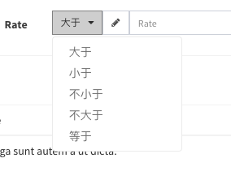

Model grid filters
model-gridProvides a set of data filters:
$grid->filter(function($filter){
// Remove the default id filter
$filter->disableIdFilter();
// Add a column filter
$filter->like('name', 'name');
...
});
Updates in v1.5.18
The v1.5.8 version has the following updates to the filter query.
Style
v1.5.18 version and above support
Adjust the style of the filter query panel, from the original pop-up modal to the embedded table header, click the filter button to expand the display, the default is not expanded, you can let it expand by default in the following way:
// Operate on the `$grid` instance
$grid->expandFilter();
// Or manipulate the `$filter` instance in the filter callback
$filter->expand();
reference Demo
Define the scope of the query
v1.5.18 version and above support
You can define your most commonly used query as a query scope, which will appear in the drop-down menu of the filter button. Here are a few examples:```php
$filter->scope('male', 'Male')->where('gender', 'm');
// Multiple conditional query
$filter->scope('new', 'Recently modified')
->whereDate('created_at', date('Y-m-d'))
->orWhere('updated_at', date('Y-m-d'));
// Relationship query
$filter->scope('address')->whereHas('profile', function ($query) {
$query->whereNotNull('address');
});
$filter->scope('trashed', 'Soft deleted data')->onlyTrashed();
The first parameter of the scope method is the key of the query. It will appear in the url parameter. The second parameter is the label of the drop-down menu item. If not filled, the first parameter will be displayed as the label.
You can call any eloquent query condition after the scope method. The effect is referenced Demo
Filter type
Currently supported filter types are the following:
Equal
sql: ... WHEREcolumn= ""$input""：
$filter->equal('column', $label);Not equal
sql: ... WHEREcolumn!= ""$input""：
$filter->notEqual('column', $label);Like
sql: ... WHEREcolumnLIKE "%"$input"%"：
$filter->like('column', $label);Ilike
sql: ... WHEREcolumnILIKE "%"$input"%"：
$filter->ilike('column', $label);contains
since v1.6.12
Equal to like query
$filter->contains('title');starts with
since v1.6.12
Query title field data starting with input
$filter->startsWith('title');starts with
since v1.6.12
Query title field data ending with input
$filter->endsWith('title');Greater then
sql: ... WHEREcolumn> "$input"：
$filter->gt('column', $label);Less than
sql: ... WHEREcolumn< "$input"：
$filter->lt('column', $label);Between
sql: ... WHEREcolumnBETWEEN "$start" AND "$end"：
$filter->between('column', $label);
// set datetime field type
$filter->between('column', $label)->datetime();
// set time field type
$filter->between('column', $label)->time();In
sql: ... WHEREcolumnin (...$inputs)：
$filter->in('column', $label)->multipleSelect(['key' => 'value']);NotIn
sql: ... WHEREcolumnnot in (...$inputs)：
$filter->notIn('column', $label)->multipleSelect(['key' => 'value']);Date
sql: ... WHERE DATE(column) = "$input"：
$filter->date('column', $label);Day
sql: ... WHERE DAY(column) = "$input"：
$filter->day('column', $label);Month
sql: ... WHERE MONTH(column) = "$input"：
$filter->month('column', $label);year
sql: ... WHERE YEAR(column) = "$input"：
$filter->year('column', $label);Where
You can use where to build more complex query filtering
sql: ... WHEREtitleLIKE "%$input" ORcontentLIKE "%$input"：
$filter->where(function ($query) {
$query->where('title', 'like', "%{$this->input}%")
->orWhere('content', 'like', "%{$this->input}%");
}, 'Text');sql: ... WHERErate>= 6 ANDcreated_at= {$input}:
$filter->where(function ($query) {
$query->whereRaw("`rate` >= 6 AND `created_at` = {$this->input}");
}, 'Text');Relationship query, query the corresponding relationship profile field:
$filter->where(function ($query) {
$query->whereHas('profile', function ($query) {
$query->where('address', 'like', "%{$this->input}%")->orWhere('email', 'like', "%{$this->input}%");
});
}, 'Address or mobile');Field type
The default field type is text input, set placeholder for text input:
$filter->equal('column')->placeholder('Please input...');You can also restrict the user input format by using some of the following methods:
$filter->equal('column')->url();
$filter->equal('column')->email();
$filter->equal('column')->integer();
$filter->equal('column')->ip();
$filter->equal('column')->mac();
$filter->equal('column')->mobile();
// $options refer to https://github.com/RobinHerbots/Inputmask/blob/4.x/README_numeric.md
$filter->equal('column')->decimal($options = []);
// $options refer to https://github.com/RobinHerbots/Inputmask/blob/4.x/README_numeric.md
$filter->equal('column')->currency($options = []);
// $options refer to https://github.com/RobinHerbots/Inputmask/blob/4.x/README_numeric.md
$filter->equal('column')->percentage($options = []);
// $options refer to https://github.com/RobinHerbots/Inputmask
$filter->equal('column')->inputmask($options = [], $icon = 'pencil');Select
$filter->equal('column')->select(['key' => 'value'...]);
// Or from the api to obtain data, api format reference model-form `select` component
$filter->equal('column')->select('api/users');multipleSelect
Generally used in conjunction with in andnotIn need to query the array of two types of inquiries can also be used in the type type of query:
$filter->in('column')->multipleSelect(['key' => 'value'...]);
// // Or from the api to obtain data, api format reference model-form `multipleSelect` component
$filter->in('column')->multipleSelect('api/users');radio
The more common scenario is the selection of categories
$filter->equal('released')->radio([
'' => 'All',
0 => 'Unreleased',
1 => 'Released',
]);checkbox
The more common scene is do the scope query with whereIn:
$filter->in('gender')->checkbox([
'm' => 'Male',
'f' => 'Female',
]);datetime
Use date and time components,$options parameter and value reference bootstrap-datetimepicker
$filter->equal('column')->datetime($options);
// `date()` equals to `datetime(['format' => 'YYYY-MM-DD'])`
$filter->equal('column')->date();
// `time()` equals to `datetime(['format' => 'HH:mm:ss'])`
$filter->equal('column')->time();
// `day()` equals to `datetime(['format' => 'DD'])`
$filter->equal('column')->day();
// `month()` equals to `datetime(['format' => 'MM'])`
$filter->equal('column')->month();
// `year()` equals to `datetime(['format' => 'YYYY'])`
$filter->equal('column')->year();
Complex query filter
You can use the $this->input to trigger complex custom queries:
$filter->where(function ($query) {
switch ($this->input) {
case 'yes':
// custom complex query if the 'yes' option is selected
$query->has('somerelationship');
break;
case 'no':
$query->doesntHave('somerelationship');
break;
}
}, 'Label of the field', 'name_for_url_shortcut')->radio([
'' => 'All',
'yes' => 'Only with relationship',
'no' => 'Only without relationship',
]);
Multi-column layout
since v1.6.0
If there are too many filters, the page will be pulled long, which will affect the look and feel of the page. This version will support the multi-column layout of the filter. For example, 6 filters are displayed in two columns.
$filter->column(1/2, function ($filter) {
$filter->like('title');
$filter->between('rate');
});
$filter->column(1/2, function ($filter) {
$filter->equal('created_at')->datetime();
$filter->between('updated_at')->datetime();
$filter->equal('released')->radio([
1 => 'YES',
0 => 'NO',
]);
});By default, there will be a filter for the primary key field in the first column, and all three filters for the left and right will have a total of 6 filters.
The first parameter of the column method sets the column width, which can be set to the scale 1/2 or 0.5, or the width of the grid column of the bootstrap is 6. If it is three columns, it can be set to 1/3.or 4
See DEMO

Filter group
since v1.6.0
Sometimes you need to set multiple filtering methods for the same field, you can do it in the following way.
$filter->group('rate', function ($group) {
$group->gt('greater than');
$group->lt('less than');
$group->nlt('not less than');
$group->ngt('not greater than');
$group->equal('equal to');
});There are several ways to call
// equals
$group->equal();
// not equal to
$group->notEqual();
// more than the
$group->gt();
// less than
$group->lt();
// greater or equal to
$group->nlt();
// less than or equal to
$group->ngt();
// match
$group->match();
// Complex conditions
$group->where();
// like query
$group->like();
// like query
$group->contains();
// ilike query
$group->ilike();
// start with the input
$group->startWith();
// end with the input
$group->endWith();See DEMO
